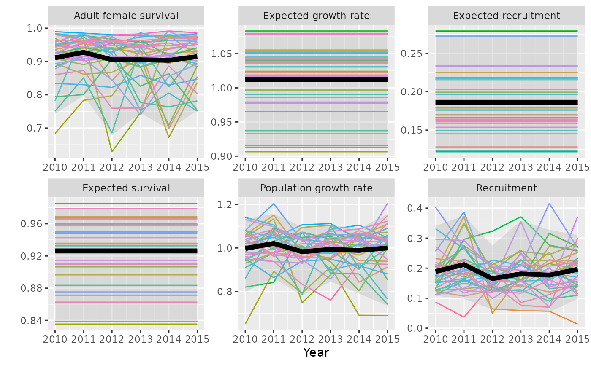

Plot Bayesian population model results including multiple sample trajectories to show variation within the model. If results include multiple populations each population is shown with a different colour.
Usage
plotTrajectories(
caribouBayesDemogMod,
replicates = 35,
metrics = c("Anthro", "Sbar", "survival", "Rbar", "recruitment", "lambda_bar",
"lambda")
)Arguments
- caribouBayesDemogMod
list. Caribou Bayesian demographic model results produced by calling
bayesianTrajectoryWorkflow(),trajectoriesFromNational(),trajectoriesFromBayesian(), ortrajectoriesFromSummary().- replicates
integer. Number of replicate populations. Ignored if samples not included in
caribouBayesDemogMod.- metrics
character. A vector of MetricTypeIDs to be included as facets in the plot.
Details
plotTrajectories and plotCompareTrajectories both plot Bayesian
population model results over time but plotTrajectories creates a faceted
plot of several metrics with the ability to show sample trajectories along
with the overall model prediction. See [plotCompareTrajectories] for
displaying the results of [bayesianScenariosWorkflow()].
See also
Caribou demography functions:
bayesianScenariosWorkflow(),
bayesianTrajectoryWorkflow(),
betaNationalPriors(),
caribouPopGrowth(),
compareTrajectories(),
compositionBiasCorrection(),
convertTrajectories(),
dataFromSheets(),
demographicProjectionApp(),
demographyDefaults(),
disturbanceDefaults(),
estimateBayesianRates(),
estimateNationalRate(),
getNationalCoefficients(),
getScenarioDefaults(),
monitoringDefaults(),
nationalTrajectoryDefaults(),
plotCompareTrajectories(),
plotSurvivalSeries(),
popGrowthTableJohnsonECCC,
simulateObservations(),
timeDefaults(),
trajectoriesFromBayesian(),
trajectoriesFromNational(),
trajectoriesFromSummary(),
trajectoriesFromSummaryForApp()
Examples
# trajectories from arbitrary demographic rates
traj <- trajectoriesFromSummary(replicates = 35, N0 = 100,
Rbar = data.frame(mean = 0.19, sd = 0.23, lower = 0.13,
upper = 0.27, Annual = 2010:2015, Year = 2010:2015,
PopulationName = "A"),
Sbar = data.frame(mean = 0.94, sd = 0.61, lower = 0.86,
upper = 0.98, Annual = 2010:2015, Year = 2010:2015,
PopulationName = "A"),
Riv = data.frame(R_iv_mean = 0.36, R_iv_shape = 2),
Siv = data.frame(S_iv_mean = 0.63, S_iv_shape = 1.4),
type = "bbou")
#> Compiling model graph
#> Resolving undeclared variables
#> Allocating nodes
#> Graph information:
#> Observed stochastic nodes: 0
#> Unobserved stochastic nodes: 14
#> Total graph size: 111
#>
#> Initializing model
#>
#> Compiling model graph
#> Resolving undeclared variables
#> Allocating nodes
#> Graph information:
#> Observed stochastic nodes: 0
#> Unobserved stochastic nodes: 14
#> Total graph size: 111
#>
#> Initializing model
#>
plotTrajectories(traj)
